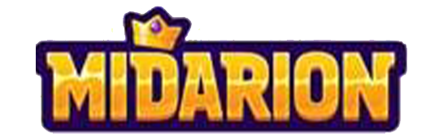

Operator Audit · Updated July 2026

Midarion Casino Review 2026 (Canada)
A combined casino and sportsbook with 9,000+ games, Interac deposits from just $10 and a four-deposit welcome package worth up to $4,500 CAD. Here's how Midarion scores against our fixed Safety Index — and the strict bonus fine print Canadian players need to know before claiming.
Updated July 2026 · Fact-checked by Daniel Fournier
The short version
Midarion Casino review: our verdict at a glance
Midarion is a combined online casino and sportsbook that pairs a large 9,000+ game library with some of the most accessible banking limits we've indexed — Interac deposits and withdrawals start at just $10. On paper it's an appealing all-rounder for Canadian players: over 7,700 slots, a full live casino, a broad sportsbook and a gamified challenges system that pays out internal coins. For this Midarion Casino review we scored it 8.0 out of 10 on our Safety Index, placing it in our "recommended" band — but with more caveats than most.
The headline draw is the four-deposit welcome package, worth up to $4,500 CAD in matched funds plus 350 free spins. That's a genuinely big number, and the low $30 qualifying deposit keeps it accessible. The banking is a real strength too, with Interac front and centre, a deep crypto menu spanning Solana, Cardano and multiple USDT networks, and quick e-wallet and crypto payouts.
Where Midarion demands caution is the bonus fine print, which is unusually strict. A 10x maximum-win cap on the deposit match, hard free-spin win caps, a tight 10-day wagering window, payment-method exclusions and a max-bet rule can all quietly limit or void your winnings if you don't play by the rules. Combined with licensing that isn't prominently published, these terms are why our Terms Integrity (7.7) and Licensing & Trust (7.6) pillars sit lower than the casino's game selection and payout speed would otherwise earn. Read our dedicated fine-print section below before you claim anything.
Best for
- + Casino + sportsbook players who want one account
- + Low-stakes players (Interac from $10)
- + Crypto users (Solana, Cardano, multi-network USDT)
- + Players who read bonus terms carefully
Less ideal for
- – Anyone who dislikes strict, capped bonus terms
- – Players who need clearly published licensing
- – Ontario residents (offers not available in AGCO mode)
- – Neteller / Skrill users (excluded from the welcome)
Sign-up offers
Midarion welcome package for Canada
A four-deposit welcome worth up to $4,500 CAD + 350 free spins. Minimum qualifying deposit is 30 CAD; wagering is 35x on deposit+bonus and 40x on free-spin winnings. 19+. Terms apply.
First deposit
Second deposit
Third deposit
Fourth deposit
Midarion's welcome package spreads across your first four deposits and totals up to $4,500 CAD in matched funds plus 350 free spins. The structure is front-loaded on the match — 100% on deposit one, tapering to 75%, 50% and 25% — but the first and fourth stages carry the highest ceilings ($1,500 CAD each), so the value doesn't simply fade as you go. Every stage needs only a 30 CAD minimum to trigger, and the very first qualifying deposit also earns you a free pick at the Bonus Crab mini-game.
The free spins are handled differently at each stage. On deposit one, the 200 spins are drip-fed at 20 per day over ten days, so you'll want to log in daily to collect them; on deposit three the 50 spins land immediately; and on deposit four you get a flat 100 spins with the bonus. Wagering is 35x on the combined deposit-plus-bonus amount, and a separate 40x applies to any winnings generated from free spins. So far, fairly standard — but the caps and rules attached to this package are where Midarion is strict, and they matter enough that we've broken them out in full below.
Read this first
The bonus fine print — explained
Midarion's welcome terms include several strict rules that can cap or completely void your winnings if you slip up. Here's the plain-English version.
Rules that can cap or void your bonus
- 110x max-win cap. The most real cash you can withdraw from a deposit match is 10× the bonus you received. Claim a $100 bonus and $1,000 is the absolute ceiling — anything above is wiped on conversion.
- 2Free-spin win caps. Winnings from the 3rd-deposit 50 spins are capped at 75 CAD; winnings from the 1st and 4th deposits' larger spin batches are capped at 150 CAD.
- 310-day wagering window. You have exactly 10 days from activation to finish the wagering. Miss it and the remaining bonus and any winnings are permanently voided.
- 4Payment exclusions. Deposits made with Neteller or Skrill do not qualify for the welcome package. Use a card, MiFinity/Jeton or crypto instead.
- 5Max bet rule. While a bonus is clearing, your maximum bet is capped at 150 CAD per spin/round. Exceeding it can void the bonus.
- 6Sequence check. You must claim the bonus before wagering your new deposit, and requesting a withdrawal while a bonus is active (or before claiming) instantly ends your eligibility.
None of these are unusual on their own, but stacked together they make Midarion's welcome a bonus for players who read terms carefully. If you prefer low-fuss play, you can simply deposit and play without claiming — just remember the sequence rule means you can't opt in after you've started wagering.
Trust & licensing
Is Midarion Casino safe?
Safety is the first question in any casino review, and Midarion is a mixed picture. As with several operators on this platform network, Midarion does not prominently publish a specific regulator or licence number in the materials we reviewed. Because a clear, verifiable licence is the most important consumer-protection signal there is, that gap is the main reason our Licensing & Trust pillar sits at 7.6. Before depositing, scroll to the site footer to confirm the current licensing and operating company — these details can change and should be checked directly rather than assumed.
On the positive side, the operational signals are solid. Midarion runs a large, aggregated library of games from established studios, all of which carry their own independent RNG certification; the site uses SSL encryption and applies standard KYC checks before withdrawals. Payments are broad, fee-friendly and quick on e-wallets and crypto, which is why Payout Reliability earns an 8.5 and Dispute Record an 8.0.
The area that genuinely pulls the score down is Terms Integrity (7.7). Midarion's bonus terms are among the stricter we've documented — the 10x win cap, the hard free-spin caps, the tight 10-day window and the max-bet and sequence rules all create ways to lose winnings you might reasonably expect to keep. That doesn't make Midarion unsafe; it makes it a casino where reading the terms genuinely matters. Treat it as you would any offshore brand: verify your account early, understand the bonus rules before opting in, and never wager more than you can comfortably afford to lose.
Brand file
Midarion Casino at a glance
- Type
- Online casino & sportsbook
- Games
- 9,000+ total · 7,700+ slots
- Licence
- Offshore — not prominently published (verify in the site footer)
- Payout speed
- Fast — e-wallet & crypto quick; bank transfer slower
- Interac limits
- Deposit $10–$9,000 · withdraw $10–$3,000
- Min. deposit
- $10 (Interac) · $20 general · $30 for bonus
- Currencies
- CAD + BTC, ETH, LTC, BCH, DOGE, TRX, BNB, SOL, ADA, USDC, USDT (multi-network)
- Live dealer
- Yes — roulette, blackjack, baccarat, game shows
- Sportsbook
- Yes — pre-match & live, 9+ sports
- Mobile
- Yes — browser-based, no app needed
- Canadian players
- Accepted (outside Ontario's regulated market)
Midarion operates as an offshore casino rather than under a Canadian provincial licence. Scores and facts reflect the CasinoIndexCA methodology and the operator's published information on the audit date.
Cashier
Banking, deposits & payouts
Midarion's banking is broad and fee-friendly, with Interac from just $10 and one of the widest crypto menus we've seen. Note that most methods have a higher minimum or lower maximum on withdrawals than on deposits.
Deposit methods & limits
| Method | Min | Max |
|---|---|---|
| Interac | $10 | $9,000 |
| Visa / Mastercard | $20 | $4,000 |
| MuchBetter | $20 | $7,500 |
| Paysafecard | $15 | $1,400 |
| Neteller | $20 | $7,800 |
| MiFinity | $15 | $3,750 |
| Bitcoin | $45 | $10,000 |
| Other crypto (ETH, LTC, SOL, ADA, USDT…) | $20 | $8,000 |
Withdrawal methods & limits
| Method | Min | Max |
|---|---|---|
| Interac e-Transfer | $10 | $3,000 |
| Withdraw to Card | $20 | $4,300 |
| MuchBetter | $20 | $7,500 |
| Bank Transfer | $20 | $7,800 |
| Skrill | $20 | $7,800 |
| MiFinity | $15 | $3,750 |
| Bitcoin | $90 | $10,000 |
| Other crypto | $35 | $8,000 |
Interac is the standout for Canadian players: deposits from $10 up to a high $9,000, and withdrawals from $10 (though capped at $3,000 per transaction). MiFinity and Paysafecard also offer low $15 entry points. The crypto menu is unusually wide, covering Bitcoin, Ethereum, Litecoin, Bitcoin Cash, Dogecoin, TRX, BNB, Solana, Cardano, USDC and USDT across ERC20, TRC20, BEP20 and Solana networks — good news for players who want fast, low-fee transactions.
A few thresholds are worth noting before you cash out. Almost all crypto withdrawals require a higher $35 minimum than the $20 deposit minimum. Bitcoin sits highest on both ends — $45 to deposit and $90 to withdraw — but also carries the largest ceiling at $10,000. And while the per-transaction maximums look generous, remember that the deposit-match bonus caps your withdrawable winnings at 10x the bonus, so your effective cash-out from a bonus run may be lower than the payment limits suggest. For withdrawals from your own real-money balance, the method limits above are what apply.
The library
Games & categories
Midarion organises its 9,000+ games into clear, easy-to-navigate categories:
Slots
Slots are by far the biggest section, with over 7,700 titles spanning every theme and volatility level. The library is well-tagged for the mechanics players actually search for: Bonus Buy slots that let you pay to trigger the feature immediately, Megaways titles with huge payline counts, and a deep Hold & Win / jackpot category that includes daily drops and progressive "Dream Drops" pools. The Hot Jackpots section surfaces the live prize amounts so you can chase the biggest pools.
Live casino & game shows
The live-dealer floor streams real dealers for roulette, baccarat, blackjack and poker, and the game-show category is well stocked with interactive titles like Candy Wheel, Gravity Wheel and Joker's Show. If you prefer automated RNG tables, Midarion carries an exceptionally deep selection — over 80 blackjack variants (Gravity, Speed, VIP) and over 80 roulette variants (Gold Saloon, French, Vegas Roulette 500x) — which is more table variety than most casinos bother to offer.
The sportsbook
Sports betting markets
Midarion pairs its casino with a full sportsbook covering the major global markets, with both pre-match and live (in-play) betting.
The sportsbook spans the sports Canadian bettors care about most — hockey, basketball, football and baseball — alongside global favourites like tennis, cricket and combat sports (MMA/UFC and boxing). Both pre-match and live betting are supported, so you can place your picks before kickoff or trade the game as it unfolds. Rather than a separate cash bonus, Midarion channels its sports promotions through the weekly challenges and coins system described below, which rewards regular betting activity with internal currency you can convert into rewards.
Gamification
Challenges, missions & coins
Alongside the welcome package, Midarion runs a challenges system split into Casino Weekly, Sports Weekly and one-time missions that award internal coins.
Casino Weekly
- Grand prize Complete any 20 challenges → 500 coins
- Play Majestic King — 150 spins at $0.45+ → 30 coins
- Play Legacy of Lost Gold — 150 spins at $0.45+ → 30 coins
- Play It's Shark Time — 150 spins at $0.45+ → 30 coins
- Play Roman Fortune — 150 spins at $0.45+ → 30 coins
Sports Weekly
- Grand prize Complete any 20 challenges → 500 coins
- Handball bet — 1 bet, $22.50+ at odds 2.00+ → 20 coins
- Football single — 1 bet, $22.50+ at odds 2.00+ → 20 coins
- Baseball single — 1 bet, $22.50+ at odds 2.00+ → 20 coins
- Tennis single — 1 bet, $22.50+ at odds 2.00+ → 20 coins
Both weekly tracks share a master countdown timer. Coins earned from challenges can be spent in Midarion's reward shop. Challenge titles and rewards rotate — check the on-site missions hub for what's currently live.
Getting started
How to sign up and claim your bonus
Getting started at Midarion takes a couple of minutes. Here's the fastest route for a Canadian player — and how to stay on the right side of the bonus rules.
- Open the Midarion site using our link so the correct Canadian offers are applied.
- Register with your email, choose a password and select CAD as your account currency.
- Confirm you are of legal age and complete the short registration.
- Deposit at least $30 to qualify for the welcome — use a card, MiFinity/Jeton or crypto (not Neteller or Skrill, which are excluded).
- Claim the bonus before you place any bets, and don't request a withdrawal while it's active — either mistake ends your eligibility.
- Keep your bets under the 150 CAD max-bet cap, finish wagering within 10 days, and collect your daily free spins from the promo area.
Wagering is 35x (deposit+bonus) / 40x (free-spin winnings). Withdrawals from the match are capped at 10x the bonus. Always read the current terms before confirming. 19+. Terms apply.
Help
Customer support
Support is available around the clock through 24/7 live chat, which is the quickest way to resolve deposit, bonus or verification questions. As with most operators of this type, expect standard KYC identity checks before your first withdrawal is approved, so verify your account early to keep payouts moving. Given the strict bonus terms, the live-chat team is also the right place to confirm exactly how a promotion works — and to ask about current licensing — before you deposit.
The balance sheet
Midarion Casino pros and cons
Strengths
- + Combined casino and sportsbook in one account
- + Large 9,000+ library (7,700+ slots, 80+ table variants)
- + Interac deposits and withdrawals from just $10
- + Very wide crypto menu (Solana, Cardano, multi-USDT)
- + Big four-deposit welcome up to $4,500 + 350 spins
- + Gamified weekly challenges with coin rewards
Watch-outs
- – Strict bonus terms: 10x win cap, hard FS caps, 10-day limit
- – Neteller & Skrill excluded from the welcome
- – Licensing not prominently published — verify first
- – Interac withdrawals capped at $3,000 per transaction
- – Not registered with iGaming Ontario
Questions & answers
Midarion Casino FAQ
Is Midarion Casino safe for Canadian players?
Midarion is an offshore online casino and sportsbook that accepts Canadian players, offers 9,000+ games and supports Interac deposits from just $10. It scores 8.0/10 on our Safety Index. Its licensing is not prominently published in the materials we reviewed, and its bonus terms are strict, so we recommend reading them carefully and confirming the licence before depositing.
What is the Midarion Casino welcome bonus?
Midarion runs a four-deposit welcome package: 100% up to $1,500 CAD + 200 free spins, 75% up to $750 CAD, 50% up to $750 CAD + 50 free spins, and 25% up to $1,500 CAD + 100 free spins — up to $4,500 CAD and 350 free spins in total. The minimum qualifying deposit is 30 CAD and wagering is 35x on deposit+bonus (40x on free-spin winnings).
What are the key Midarion bonus terms to watch?
The terms are strict: Neteller and Skrill deposits do not qualify; you have 10 days to complete wagering; withdrawals from the deposit match are capped at 10x the bonus amount; free-spin winnings are capped at 75–150 CAD; the max bet while a bonus is active is 150 CAD; and you must claim the bonus before wagering and not withdraw while it is active, or you lose eligibility.
Can I use Interac at Midarion Casino?
Yes. Interac deposits start at just $10 (up to $9,000), and withdrawals start at $10 but are capped at $3,000 per transaction. Midarion also supports cards, MuchBetter, Paysafecard, MiFinity and a wide range of cryptocurrencies.
How many games does Midarion Casino have?
Midarion hosts 9,000+ games, including over 7,700 slots (Bonus Buy, Megaways, Hold & Win and Dream Drops jackpots), a full live casino with game shows, 80+ blackjack and 80+ roulette variants, and a sportsbook covering football, tennis, MMA, hockey, basketball and more.
Does Midarion have a sportsbook?
Yes. Midarion is a combined casino and sportsbook with pre-match and live betting across football, cricket, MMA/UFC, American football, basketball, ice hockey, tennis, boxing and baseball, plus weekly sports challenges that award coins.
Is Midarion Casino available in Ontario?
Midarion is not registered with iGaming Ontario and operates under offshore licensing. In line with AGCO advertising standards, we do not display bonus offers to Ontario visitors. Players in the rest of Canada can register and claim promotions.
The verdict
A big, accessible all-rounder — for players who read the terms. Score 8.0 / 10.
Midarion gets a lot right for Canadians: a 9,000-game casino and sportsbook in one account, $10 Interac banking, a very wide crypto menu and a large four-deposit welcome. The catch is the fine print — a 10x win cap, hard free-spin caps, a tight 10-day window and payment exclusions — plus licensing that isn't clearly published. Read the rules, verify the licence, and it's a solid, feature-rich pick.
19+. Play responsibly. Bonuses carry terms and wagering; offers can change. If gambling stops being fun, see our responsible gambling resources.